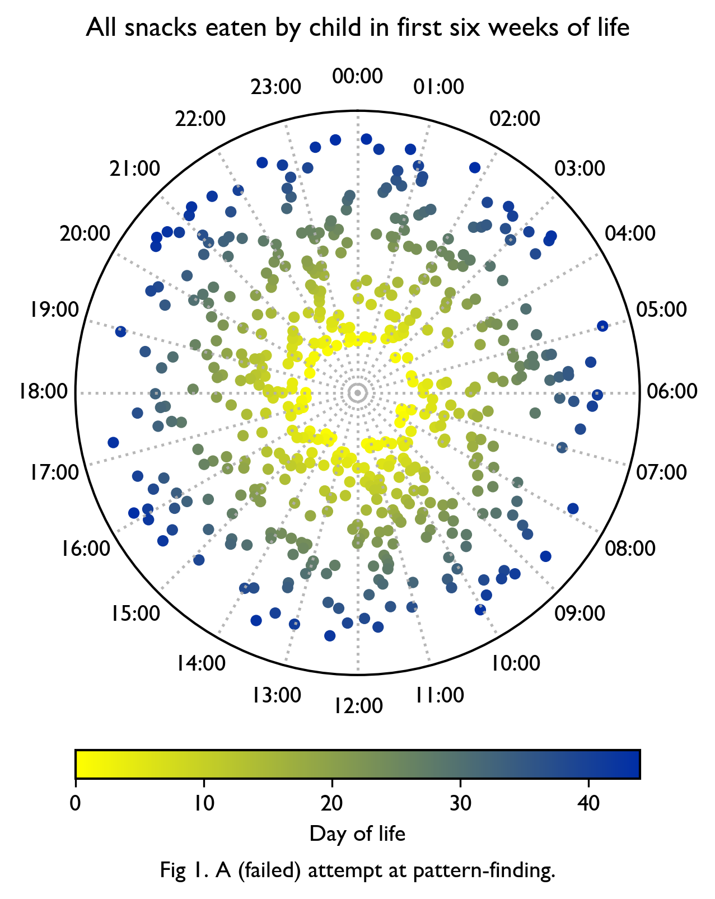

2025-06 | No linear time
I am growing potatoes on the balcony of our very small flat and they
are absolutely thriving. Something something grow where yr planted.
I don’t know where the phrase “no gods no masters no linear fucking time”
came from, maybe a variation of
this
graffiti, or maybe somewhere else in entrails of the world wide web,
but I think of it often right now, existing alongside a very small child.
I appreciate the sheer universality of the whole thing — having a child is both
simultaneously an intensely private experience and a resoundingly shared one.
I think only a few things are like that, but they are the big ones: love/death/heartbreak/etc.
(Somewhat surprisingly to me, I find myself either unable or unwilling to articulate much else definite
about this strange spacetime I find myself in. One particularly cold hostile spring Z told me that
things often only make sense later, which I find useful. If we tell ourselves stories in order
to live, it’s good to pay attention to what we’re telling.)

N recommended Other Minds, which I’m not done yet but which I also recommend:
a book about consciousness, using the example of cephalopods, whose last common ancestor with humans
was some sort of blind flatworm, and whose consciousness therefore developed entirely independently of
vertebrate consciousness. It’s a really well put together combination of neuroscience/evolution/philosophy of mind —
at points it feels like an extension of the excellent canonical paper
What is it like to be a bat?,
which it cites. (It’s also a good jumping-off point to discover papers on neuroscience and squids.
At one point it cites the brilliantly-titled monograph
The Behavior and Natural History of the Caribbean Reef Squid Sepioteuthis sepioidea With a
Consideration of Social, Signal, and Defensive Patterns for Difficult and Dangerous Environments,
which contains this great sentence:
Precision, calm, caution, opportunism, and deception are all characteristic of sepioidea.)
A combination of two things everyone likes: the Talking Heads released a first-ever
music video
for Psycho Killer, starring Saoirse Ronan, 48 years after it was the first song David Byrne ever wrote.
Unsettling in its ordinariness, almost but not quite skirting the shores of manic pixie dream girl
territory.
Another (related) combination of two things many people like: I’m rereading David Byrne’s Bicycle Diaries,
which can be summarized as “slightly autistic* guy rides his bike in different cities at a leisurely pace
telling you whatever comes to mind, which may or may not involve bicycles or urbanism” [*self-described].
Written in 2009, it comes off as quite thoughtful, wholesome and maybe at points somewhat naive. I read it
when it came out, as a somewhat younger and more idealistic person who was just discovering the whole
bikes-and-urbanism thing, volunteering at community bike shops and joining my local bike advocacy groups
(incl. the comradely Brno na kole) with a fuzzily held optimistic notion that just one more bike lane will
save the world. Things seem grimmer on all fronts these days, but David’s gentle peripatetic journey is
worth revisiting and very much rewards a casual read; you can open it at any page, really. (I don’t know who
I gave my physical copy to, probably over a decade ago, but I would vaguely like it back, exactly because
of this kind of open-at-any-page quality.) It’s fun to watch the guy who made some of the genuinely
strangest/most interesting sounds of the 70s say very sensible-dad meandering things. Maybe the
Talking Heads have kind of always been at the nexus of truly strange sounds and pro-social dad territory?
Anyway, it doesn’t matter, remain in light, etc —
» At one point, as an example of her idea that oppressed people become oppressors, she mentions Israel’s
dominance over the Palestinians, and the aggressive behavior of the Israelis, as if this were a well-known fact.
I don’t altogether disagree, but I am surprised to hear it voiced so openly. In America, and especially in New York,
there is a hidden level of not-so-subtle censorship of such statements. They are just never heard, or if they are,
the speaker is often given a nasty look or accused of anti-Semitism. I wonder how many other aspects of North
American thought might be self-censored. Quite a few, I would imagine. Every culture must have its no-speak/no-tell
zones. The “policeman inside,” as William Burroughs called it.«
- David Byrne in conversation with Iwona Blazwick, early 2000s
I’m continuing the pattern of watching people do intense physical things while being somewhat mobility-limited myself:
this
neat documentary about the thoroughly insane Barkley Marathons, and
this
one about the first female finisher (the literally inimitable Jasmin Paris).
M recommended the essays of Ursula Le Guin. In Why do Americans Fear Dragons
she defends reading for fun:
»"My wife reads novels. I haven't got the time." "I used to read that science fiction stuff
when I was a teenager, but of course I don't now." " " "Fairy stories are for kids. I live
in the real world." Who speaks so? Who is it that dismisses War and Peace, The Time Machine,
and A Midsummer Night's Dream with this perfect self-assurance? It is, I fear, the man in the
street - the hardworking, over thirty American male - the men who run this country. Such a
rejection of the entire art of fiction is related to several American characteristics: our
Puritanism, our work ethic, our profitmindedness, and even our sexual mores. To read War and
Peace or The Lord of the Rings plainly is not "work" - you do it for pleasure. And if it cannot be
justified as "educational" or as "self-improvement," then, in the Puritan value system, it can
only be self-indulgence or escapism. For pleasure is not a value, to the Puritan; on the contrary,
it is a sin.«
(Unfortunately, since then, the Absolute Worst People have started naming their horrible tech companies after things from the Lord of the Rings — annoying.)
Speaking of doing things for fun, J introduced me to the concept of New Years Bingo, which can
be easily adapted to Summer Bingo (because at the moment, resolutions of self-betterment can get bent, frankly).
The idea is pretty much what it says on the box: write down 25 things it could be fun-and-or-useful (but not existentially mandatory) to do
(mine include visiting an as-yet-unvisited regional park and fixing the disc brakes on my horrible hardtail) and see if you can check off
enough of them to get a bingo. (In a related vein I now have a running list of places I have jumped in the water this summer, inspired of
course by the Varsity Outdoors Club's summer skinny-dipping challenge; mine differs in that I tend to be at least somewhat dressed and that I
count by "point of entry into water" as opposed to "body of water". I always thought that only ever counting the Pacific Ocean as one was a
letdown for people who live on a fjord system on the Pacific Ocean.)
🎶
In memoriam Brian Wilson, of course.
(The Langley Schools Music Project always makes me think of
this adorableness.)